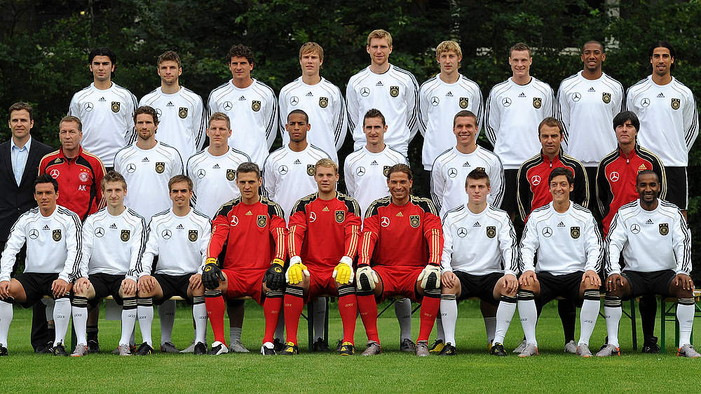

With multiple talented players on the team, Germany had a farily good chance of winning the World Cup.

Germany was assigned to Group D, with Ghana, Australia, and Serbia. Germany won two games (4-0 Australia, 1-0 Ghana) and lost one (0-1 Serbia). Even with only 6 points, Germany moved to the next stage as the first place in the group. In the round of 16, they knocked England out with a score of 4-1. In the quarter-final, they sent Argentina home with a score of 4-0. Due to the extraordinary performance, most fans expected Germany to win the World Cup this year. Unfortunately, they were defeated by Spain in the semi-final by only one goal. Once again, Germany ended their World Cup trip in third place after beating Uruguay 3-2.
If we take a closer look at the squad, there are a few things that worth our attention. First, there was one more player, Piotr Trochowski, who almost shares the same story with Klose and Podolski. They all have a father with German heritage, a Polish mother, and migrated to West Germany when they were young. Second, there was one player, Cacau, who was born in Santo André, Brazil, and first became a German citizen in 2009. Third, Mesut Özil was called to join the national football team in 2010. As a first-generation immigrant, he was born in the Ruhr area, but he often identified himself as a Turkish-German. Fourth, the team also had Dennis Aogo (born in Karlsruhe, of Nigerian heritage), Sami Khedira (born in Stuttgart and trained there as well), and Jerome Boateng (born and grew up in West Berlin) on the national team. His brother Kevin-Prince Boateng decided to play for the Ghana during 2010 World Cup while Jerome Boateng chose to play for the national team.
Fans modified the song produced by the indie-rock band Sportfreunde Stiller "54, 74, 90, 06" four years ago and changed it to "54,74,90,10" to express their desire for the national team to win the World Cup.